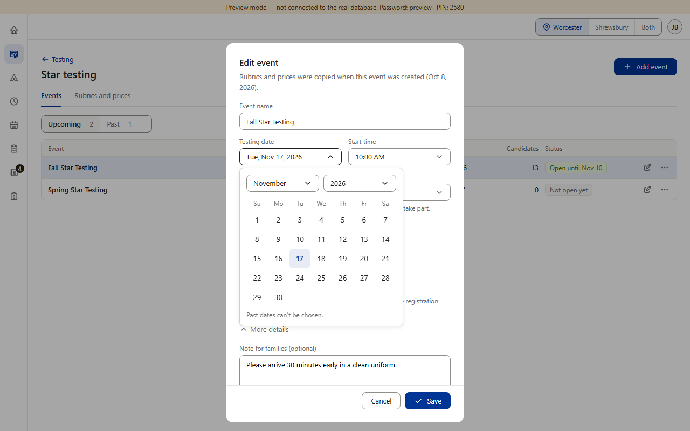
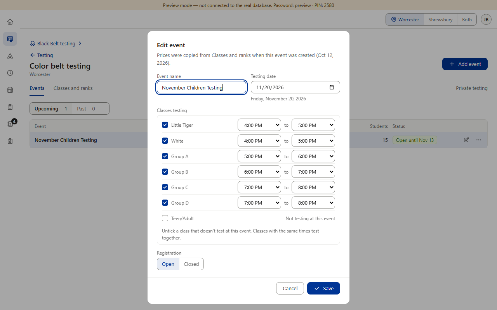
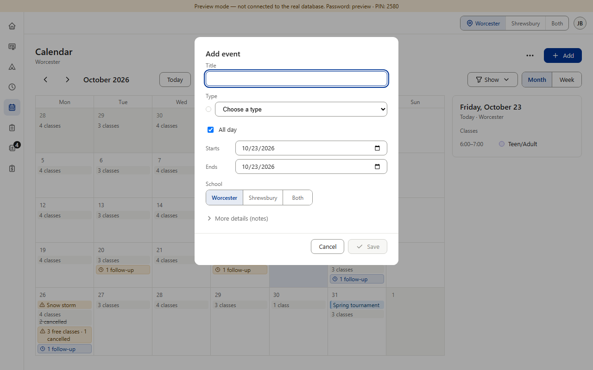
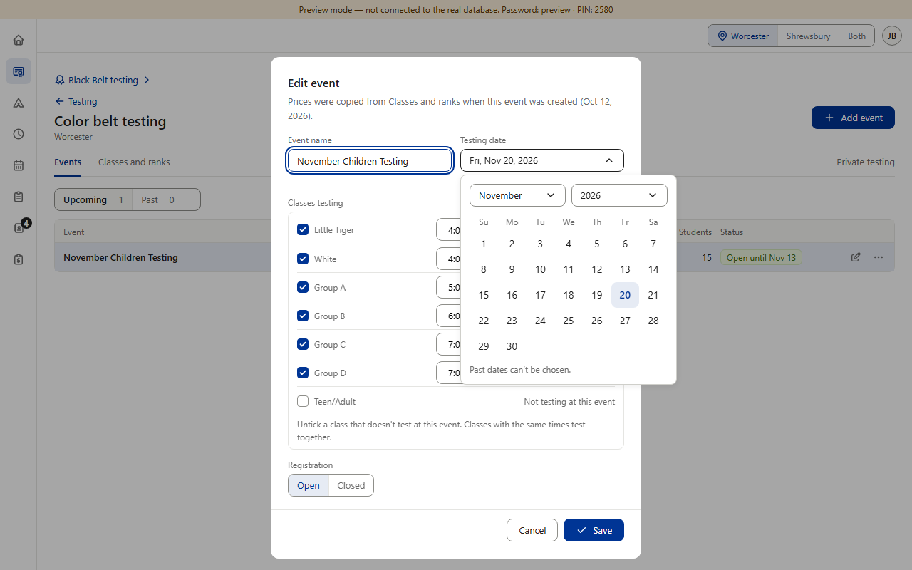

Mixed: approved, planned, drift. Star has the shared date picker: a button that shows the date in words and opens a big month calendar. Everywhere else a date is the browser's own box — numbers like “11/20/2026” with a small calendar icon — which looks different on the desk PC, the iPad and a phone. Color Belt was approved to differ (v0.502); Black Belt planned to switch once Star's picker was on main — it is now (v0.911); Camps' other dates, Prospects, Schedule, Calendar and Forms never decided (drift). Item 14b, the time lists, comes next. (Preview screenshots at PC size · fake data)



